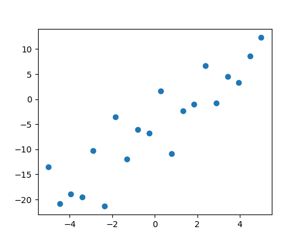
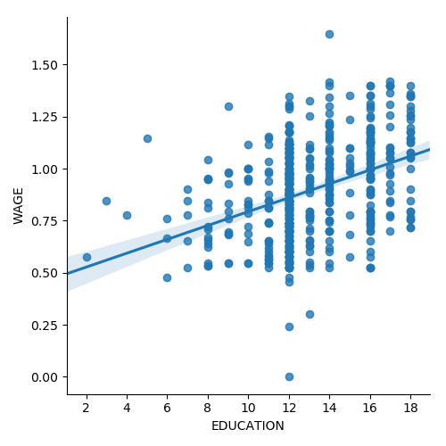
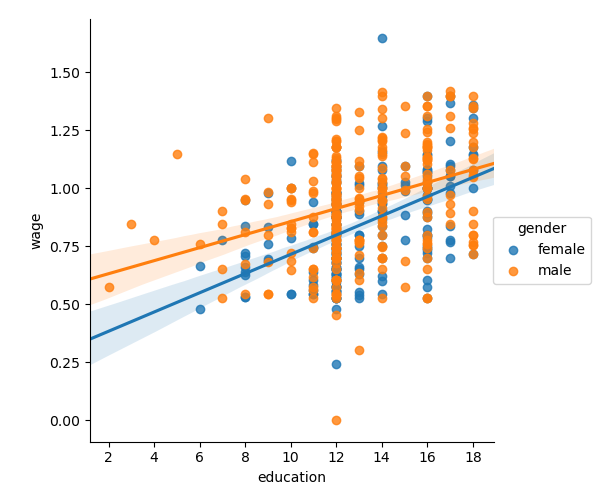

3.1. Statistics in Python¶
Author: Gaël Varoquaux
Requirements
- Standard scientific Python environment (numpy, scipy, matplotlib)
- Pandas
- Statsmodels
- Seaborn
To install Python and these dependencies, we recommend that you download Anaconda Python or Enthought Canopy, or preferably use the package manager if you are under Ubuntu or other linux.
See also
- Bayesian statistics in Python: This chapter does not cover tools for Bayesian statistics. Of particular interest for Bayesian modelling is PyMC, which implements a probabilistic programming language in Python.
- Read a statistics book: The Think stats book is available as free PDF or in print and is a great introduction to statistics.
Tip
Why Python for statistics?
R is a language dedicated to statistics. Python is a general-purpose language with statistics modules. R has more statistical analysis features than Python, and specialized syntaxes. However, when it comes to building complex analysis pipelines that mix statistics with e.g. image analysis, text mining, or control of a physical experiment, the richness of Python is an invaluable asset.
Contents
Tip
In this document, the Python inputs are represented with the sign “>>>”.
Disclaimer: Gender questions
Some of the examples of this tutorial are chosen around gender questions. The reason is that on such questions controlling the truth of a claim actually matters to many people.
3.1.1. Data representation and interaction¶
3.1.1.1. Data as a table¶
The setting that we consider for statistical analysis is that of multiple
observations or samples described by a set of different attributes
or features. The data can than be seen as a 2D table, or matrix, with
columns giving the different attributes of the data, and rows the
observations. For instance, the data contained in
examples/brain_size.csv:
"";"Gender";"FSIQ";"VIQ";"PIQ";"Weight";"Height";"MRI_Count"
"1";"Female";133;132;124;"118";"64.5";816932
"2";"Male";140;150;124;".";"72.5";1001121
"3";"Male";139;123;150;"143";"73.3";1038437
"4";"Male";133;129;128;"172";"68.8";965353
"5";"Female";137;132;134;"147";"65.0";951545
3.1.1.2. The pandas data-frame¶
Tip
We will store and manipulate this data in a
pandas.DataFrame, from the pandas module. It is the Python equivalent of
the spreadsheet table. It is different from a 2D numpy array as it
has named columns, can contain a mixture of different data types by
column, and has elaborate selection and pivotal mechanisms.
Creating dataframes: reading data files or converting arrays¶
Reading from a CSV file: Using the above CSV file that gives observations of brain size and weight and IQ (Willerman et al. 1991), the data are a mixture of numerical and categorical values:
>>> import pandas
>>> data = pandas.read_csv('examples/brain_size.csv', sep=';', na_values=".")
>>> data
Unnamed: 0 Gender FSIQ VIQ PIQ Weight Height MRI_Count
0 1 Female 133 132 124 118.0 64.5 816932
1 2 Male 140 150 124 NaN 72.5 1001121
2 3 Male 139 123 150 143.0 73.3 1038437
3 4 Male 133 129 128 172.0 68.8 965353
4 5 Female 137 132 134 147.0 65.0 951545
...
Warning
Missing values
The weight of the second individual is missing in the CSV file. If we don’t specify the missing value (NA = not available) marker, we will not be able to do statistical analysis.
Creating from arrays: A pandas.DataFrame can also be seen
as a dictionary of 1D ‘series’, eg arrays or lists. If we have 3
numpy arrays:
>>> import numpy as np
>>> t = np.linspace(-6, 6, 20)
>>> sin_t = np.sin(t)
>>> cos_t = np.cos(t)
We can expose them as a pandas.DataFrame:
>>> pandas.DataFrame({'t': t, 'sin': sin_t, 'cos': cos_t})
t sin cos
0 -6.000000 0.279415 0.960170
1 -5.368421 0.792419 0.609977
2 -4.736842 0.999701 0.024451
3 -4.105263 0.821291 -0.570509
4 -3.473684 0.326021 -0.945363
5 -2.842105 -0.295030 -0.955488
6 -2.210526 -0.802257 -0.596979
7 -1.578947 -0.999967 -0.008151
8 -0.947368 -0.811882 0.583822
...
Other inputs: pandas can input data from SQL, excel files, or other formats. See the pandas documentation.
Manipulating data¶
data is a pandas.DataFrame, that resembles R’s dataframe:
>>> data.shape # 40 rows and 8 columns
(40, 8)
>>> data.columns # It has columns
Index([u'Unnamed: 0', u'Gender', u'FSIQ', u'VIQ', u'PIQ', u'Weight', u'Height', u'MRI_Count'], dtype='object')
>>> print(data['Gender']) # Columns can be addressed by name
0 Female
1 Male
2 Male
3 Male
4 Female
...
>>> # Simpler selector
>>> data[data['Gender'] == 'Female']['VIQ'].mean()
109.45
Note
For a quick view on a large dataframe, use its describe
method: pandas.DataFrame.describe().
groupby: splitting a dataframe on values of categorical variables:
>>> groupby_gender = data.groupby('Gender')
>>> for gender, value in groupby_gender['VIQ']:
... print((gender, value.mean()))
('Female', 109.45)
('Male', 115.25)
groupby_gender is a powerful object that exposes many operations on the resulting group of dataframes:
>>> groupby_gender.mean()
Unnamed: 0 FSIQ VIQ PIQ Weight Height MRI_Count
Gender
Female 19.65 111.9 109.45 110.45 137.200000 65.765000 862654.6
Male 21.35 115.0 115.25 111.60 166.444444 71.431579 954855.4
Tip
Use tab-completion on groupby_gender to find more. Other common grouping functions are median, count (useful for checking to see the amount of missing values in different subsets) or sum. Groupby evaluation is lazy, no work is done until an aggregation function is applied.

Exercise
What is the mean value for VIQ for the full population?
How many males/females were included in this study?
Hint use ‘tab completion’ to find out the methods that can be called, instead of ‘mean’ in the above example.
What is the average value of MRI counts expressed in log units, for males and females?
Note
groupby_gender.boxplot is used for the plots above (see this example).
Plotting data¶
Pandas comes with some plotting tools (pandas.tools.plotting, using
matplotlib behind the scene) to display statistics of the data in
dataframes:
Scatter matrices:
>>> from pandas.tools import plotting
>>> plotting.scatter_matrix(data[['Weight', 'Height', 'MRI_Count']])
>>> plotting.scatter_matrix(data[['PIQ', 'VIQ', 'FSIQ']])
Exercise
Plot the scatter matrix for males only, and for females only. Do you think that the 2 sub-populations correspond to gender?
3.1.2. Hypothesis testing: comparing two groups¶
For simple statistical tests, we will
use the scipy.stats sub-module of scipy:
>>> from scipy import stats
See also
Scipy is a vast library. For a quick summary to the whole library, see the scipy chapter.
3.1.2.1. Student’s t-test: the simplest statistical test¶
1-sample t-test: testing the value of a population mean¶

scipy.stats.ttest_1samp() tests if the population mean of data is
likely to be equal to a given value (technically if observations are
drawn from a Gaussian distributions of given population mean). It returns
the T statistic,
and the p-value (see the
function’s help):
>>> stats.ttest_1samp(data['VIQ'], 0)
Ttest_1sampResult(statistic=30.088099970..., pvalue=1.32891964...e-28)
Tip
With a p-value of 10^-28 we can claim that the population mean for the IQ (VIQ measure) is not 0.
2-sample t-test: testing for difference across populations¶
We have seen above that the mean VIQ in the male and female populations
were different. To test if this is significant, we do a 2-sample t-test
with scipy.stats.ttest_ind():
>>> female_viq = data[data['Gender'] == 'Female']['VIQ']
>>> male_viq = data[data['Gender'] == 'Male']['VIQ']
>>> stats.ttest_ind(female_viq, male_viq)
Ttest_indResult(statistic=-0.77261617232..., pvalue=0.4445287677858...)
3.1.2.2. Paired tests: repeated measurements on the same individuals¶
PIQ, VIQ, and FSIQ give 3 measures of IQ. Let us test if FISQ and PIQ are significantly different. We can use a 2 sample test:
>>> stats.ttest_ind(data['FSIQ'], data['PIQ'])
Ttest_indResult(statistic=0.46563759638..., pvalue=0.64277250...)
The problem with this approach is that it forgets that there are links between observations: FSIQ and PIQ are measured on the same individuals. Thus the variance due to inter-subject variability is confounding, and can be removed, using a “paired test”, or “repeated measures test”:
>>> stats.ttest_rel(data['FSIQ'], data['PIQ'])
Ttest_relResult(statistic=1.784201940..., pvalue=0.082172638183...)
This is equivalent to a 1-sample test on the difference:
>>> stats.ttest_1samp(data['FSIQ'] - data['PIQ'], 0)
Ttest_1sampResult(statistic=1.784201940..., pvalue=0.082172638...)
T-tests assume Gaussian errors. We can use a Wilcoxon signed-rank test, that relaxes this assumption:
>>> stats.wilcoxon(data['FSIQ'], data['PIQ'])
WilcoxonResult(statistic=274.5, pvalue=0.106594927...)
Note
The corresponding test in the non paired case is the Mann–Whitney U
test,
scipy.stats.mannwhitneyu().
Exercise
- Test the difference between weights in males and females.
- Use non parametric statistics to test the difference between VIQ in males and females.
Conclusion: we find that the data does not support the hypothesis that males and females have different VIQ.
3.1.3. Linear models, multiple factors, and analysis of variance¶
3.1.3.1. “formulas” to specify statistical models in Python¶
A simple linear regression¶
Given two set of observations, x and y, we want to test the hypothesis that y is a linear function of x. In other terms:

where e is observation noise. We will use the statsmodels module to:
- Fit a linear model. We will use the simplest strategy, ordinary least squares (OLS).
- Test that coef is non zero.
First, we generate simulated data according to the model:
>>> import numpy as np
>>> x = np.linspace(-5, 5, 20)
>>> np.random.seed(1)
>>> # normal distributed noise
>>> y = -5 + 3*x + 4 * np.random.normal(size=x.shape)
>>> # Create a data frame containing all the relevant variables
>>> data = pandas.DataFrame({'x': x, 'y': y})
Then we specify an OLS model and fit it:
>>> from statsmodels.formula.api import ols
>>> model = ols("y ~ x", data).fit()
We can inspect the various statistics derived from the fit:
>>> print(model.summary())
OLS Regression Results
==========================...
Dep. Variable: y R-squared: 0.804
Model: OLS Adj. R-squared: 0.794
Method: Least Squares F-statistic: 74.03
Date: ... Prob (F-statistic): 8.56e-08
Time: ... Log-Likelihood: -57.988
No. Observations: 20 AIC: 120.0
Df Residuals: 18 BIC: 122.0
Df Model: 1
Covariance Type: nonrobust
==========================...
coef std err t P>|t| [0.025 0.975]
------------------------------------------...
Intercept -5.5335 1.036 -5.342 0.000 -7.710 -3.357
x 2.9369 0.341 8.604 0.000 2.220 3.654
==========================...
Omnibus: 0.100 Durbin-Watson: 2.956
Prob(Omnibus): 0.951 Jarque-Bera (JB): 0.322
Skew: -0.058 Prob(JB): 0.851
Kurtosis: 2.390 Cond. No. 3.03
==========================...
Warnings:
[1] Standard Errors assume that the covariance matrix of the errors is correctly specified.
Terminology:
Statsmodels uses a statistical terminology: the y variable in statsmodels is called ‘endogenous’ while the x variable is called exogenous. This is discussed in more detail here.
To simplify, y (endogenous) is the value you are trying to predict, while x (exogenous) represents the features you are using to make the prediction.
Exercise
Retrieve the estimated parameters from the model above. Hint: use tab-completion to find the relevent attribute.
Categorical variables: comparing groups or multiple categories¶
Let us go back the data on brain size:
>>> data = pandas.read_csv('examples/brain_size.csv', sep=';', na_values=".")
We can write a comparison between IQ of male and female using a linear model:
>>> model = ols("VIQ ~ Gender + 1", data).fit()
>>> print(model.summary())
OLS Regression Results
==========================...
Dep. Variable: VIQ R-squared: 0.015
Model: OLS Adj. R-squared: -0.010
Method: Least Squares F-statistic: 0.5969
Date: ... Prob (F-statistic): 0.445
Time: ... Log-Likelihood: -182.42
No. Observations: 40 AIC: 368.8
Df Residuals: 38 BIC: 372.2
Df Model: 1
Covariance Type: nonrobust
==========================...
coef std err t P>|t| [0.025 0.975]
-----------------------------------------------------------------------...
Intercept 109.4500 5.308 20.619 0.000 98.704 120.196
Gender[T.Male] 5.8000 7.507 0.773 0.445 -9.397 20.997
==========================...
Omnibus: 26.188 Durbin-Watson: 1.709
Prob(Omnibus): 0.000 Jarque-Bera (JB): 3.703
Skew: 0.010 Prob(JB): 0.157
Kurtosis: 1.510 Cond. No. 2.62
==========================...
Warnings:
[1] Standard Errors assume that the covariance matrix of the errors is correctly specified.
Tips on specifying model
Forcing categorical: the ‘Gender’ is automatically detected as a categorical variable, and thus each of its different values are treated as different entities.
An integer column can be forced to be treated as categorical using:
>>> model = ols('VIQ ~ C(Gender)', data).fit()
Intercept: We can remove the intercept using - 1 in the formula, or force the use of an intercept using + 1.
Tip
By default, statsmodels treats a categorical variable with K possible values as K-1 ‘dummy’ boolean variables (the last level being absorbed into the intercept term). This is almost always a good default choice - however, it is possible to specify different encodings for categorical variables (http://statsmodels.sourceforge.net/devel/contrasts.html).
Link to t-tests between different FSIQ and PIQ
To compare different types of IQ, we need to create a “long-form” table, listing IQs, where the type of IQ is indicated by a categorical variable:
>>> data_fisq = pandas.DataFrame({'iq': data['FSIQ'], 'type': 'fsiq'})
>>> data_piq = pandas.DataFrame({'iq': data['PIQ'], 'type': 'piq'})
>>> data_long = pandas.concat((data_fisq, data_piq))
>>> print(data_long)
iq type
0 133 fsiq
1 140 fsiq
2 139 fsiq
...
31 137 piq
32 110 piq
33 86 piq
...
>>> model = ols("iq ~ type", data_long).fit()
>>> print(model.summary())
OLS Regression Results
...
==========================...
coef std err t P>|t| [0.025 0.975]
------------------------------------------...
Intercept 113.4500 3.683 30.807 0.000 106.119 120.781
type[T.piq] -2.4250 5.208 -0.466 0.643 -12.793 7.943
...
We can see that we retrieve the same values for t-test and corresponding p-values for the effect of the type of iq than the previous t-test:
>>> stats.ttest_ind(data['FSIQ'], data['PIQ'])
Ttest_indResult(statistic=0.46563759638..., pvalue=0.64277250...)
3.1.3.2. Multiple Regression: including multiple factors¶

Consider a linear model explaining a variable z (the dependent variable) with 2 variables x and y:

Such a model can be seen in 3D as fitting a plane to a cloud of (x, y, z) points.
Example: the iris data (examples/iris.csv)
Tip
Sepal and petal size tend to be related: bigger flowers are bigger! But is there in addition a systematic effect of species?

>>> data = pandas.read_csv('examples/iris.csv')
>>> model = ols('sepal_width ~ name + petal_length', data).fit()
>>> print(model.summary())
OLS Regression Results
==========================...
Dep. Variable: sepal_width R-squared: 0.478
Model: OLS Adj. R-squared: 0.468
Method: Least Squares F-statistic: 44.63
Date: ... Prob (F-statistic): 1.58e-20
Time: ... Log-Likelihood: -38.185
No. Observations: 150 AIC: 84.37
Df Residuals: 146 BIC: 96.41
Df Model: 3
Covariance Type: nonrobust
==========================...
coef std err t P>|t| [0.025 0.975]
------------------------------------------...
Intercept 2.9813 0.099 29.989 0.000 2.785 3.178
name[T.versicolor] -1.4821 0.181 -8.190 0.000 -1.840 -1.124
name[T.virginica] -1.6635 0.256 -6.502 0.000 -2.169 -1.158
petal_length 0.2983 0.061 4.920 0.000 0.178 0.418
==========================...
Omnibus: 2.868 Durbin-Watson: 1.753
Prob(Omnibus): 0.238 Jarque-Bera (JB): 2.885
Skew: -0.082 Prob(JB): 0.236
Kurtosis: 3.659 Cond. No. 54.0
==========================...
Warnings:
[1] Standard Errors assume that the covariance matrix of the errors is correctly specified.
3.1.3.3. Post-hoc hypothesis testing: analysis of variance (ANOVA)¶
In the above iris example, we wish to test if the petal length is
different between versicolor and virginica, after removing the effect of
sepal width. This can be formulated as testing the difference between the
coefficient associated to versicolor and virginica in the linear model
estimated above (it is an Analysis of Variance, ANOVA). For this, we
write a vector of ‘contrast’ on the parameters estimated: we want to
test "name[T.versicolor] - name[T.virginica]", with an F-test:
>>> print(model.f_test([0, 1, -1, 0]))
<F test: F=array([[3.24533535]]), p=0.07369..., df_denom=146, df_num=1>
Is this difference significant?
Exercise
Going back to the brain size + IQ data, test if the VIQ of male and female are different after removing the effect of brain size, height and weight.
3.1.4. More visualization: seaborn for statistical exploration¶
Seaborn combines simple statistical fits with plotting on pandas dataframes.
Let us consider a data giving wages and many other personal information on 500 individuals (Berndt, ER. The Practice of Econometrics. 1991. NY: Addison-Wesley).
Tip
The full code loading and plotting of the wages data is found in corresponding example.
>>> print(data)
EDUCATION SOUTH SEX EXPERIENCE UNION WAGE AGE RACE \
0 8 0 1 21 0 0.707570 35 2
1 9 0 1 42 0 0.694605 57 3
2 12 0 0 1 0 0.824126 19 3
3 12 0 0 4 0 0.602060 22 3
...
3.1.4.1. Pairplot: scatter matrices¶
We can easily have an intuition on the interactions between continuous
variables using seaborn.pairplot() to display a scatter matrix:
>>> import seaborn
>>> seaborn.pairplot(data, vars=['WAGE', 'AGE', 'EDUCATION'],
... kind='reg')

Categorical variables can be plotted as the hue:
>>> seaborn.pairplot(data, vars=['WAGE', 'AGE', 'EDUCATION'],
... kind='reg', hue='SEX')
Look and feel and matplotlib settings
Seaborn changes the default of matplotlib figures to achieve a more “modern”, “excel-like” look. It does that upon import. You can reset the default using:
>>> from matplotlib import pyplot as plt
>>> plt.rcdefaults()
Tip
To switch back to seaborn settings, or understand better styling in seaborn, see the relevent section of the seaborn documentation.
3.1.4.2. lmplot: plotting a univariate regression¶
A regression capturing the relation between one variable and another, eg
wage and eduction, can be plotted using seaborn.lmplot():
>>> seaborn.lmplot(y='WAGE', x='EDUCATION', data=data)
Robust regression
Tip
Given that, in the above plot, there seems to be a couple of data points that are outside of the main cloud to the right, they might be outliers, not representative of the population, but driving the regression.
To compute a regression that is less sentive to outliers, one must
use a robust model. This is done in
seaborn using robust=True in the plotting functions, or in
statsmodels by replacing the use of the OLS by a “Robust Linear
Model”, statsmodels.formula.api.rlm().
3.1.5. Testing for interactions¶
Do wages increase more with education for males than females?
Tip
The plot above is made of two different fits. We need to formulate a single model that tests for a variance of slope across the two populations. This is done via an “interaction”.
>>> result = sm.ols(formula='wage ~ education + gender + education * gender',
... data=data).fit()
>>> print(result.summary())
...
coef std err t P>|t| [0.025 0.975]
------------------------------------------------------------------------------
Intercept 0.2998 0.072 4.173 0.000 0.159 0.441
gender[T.male] 0.2750 0.093 2.972 0.003 0.093 0.457
education 0.0415 0.005 7.647 0.000 0.031 0.052
education:gender[T.male] -0.0134 0.007 -1.919 0.056 -0.027 0.000
==========================...
...
Can we conclude that education benefits males more than females?
Take home messages
- Hypothesis testing and p-values give you the significance of an effect / difference.
- Formulas (with categorical variables) enable you to express rich links in your data.
- Visualizing your data and fitting simple models give insight into the data.
- Conditionning (adding factors that can explain all or part of the variation) is an important modeling aspect that changes the interpretation.